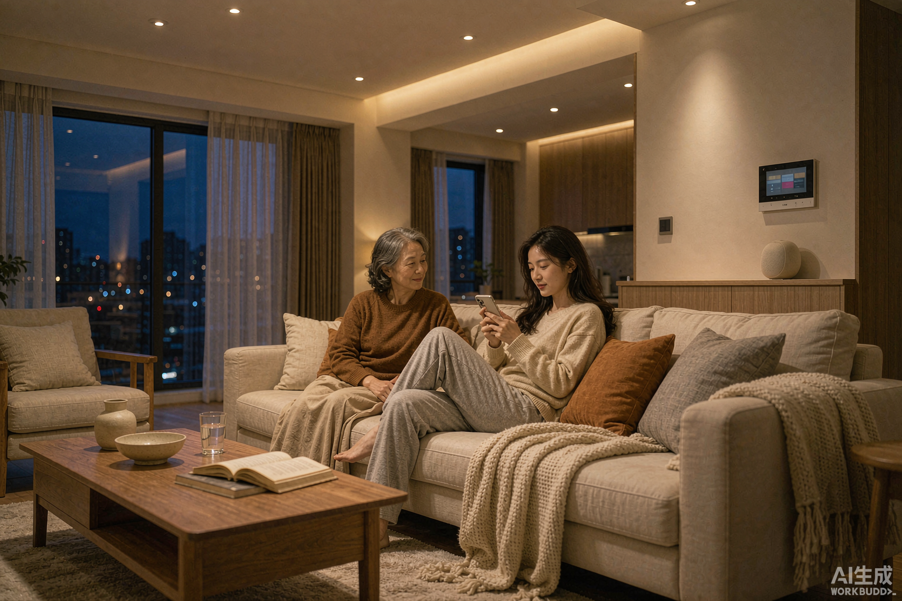
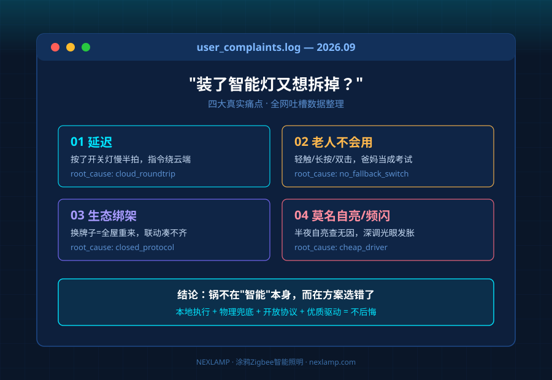
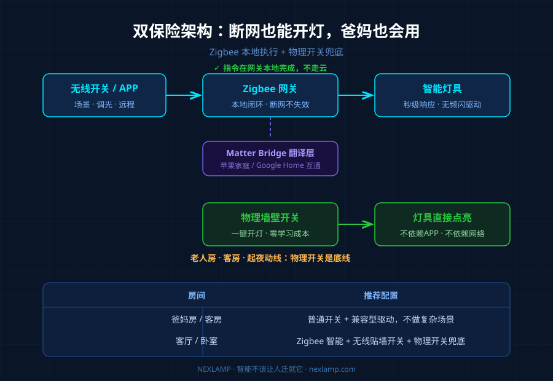
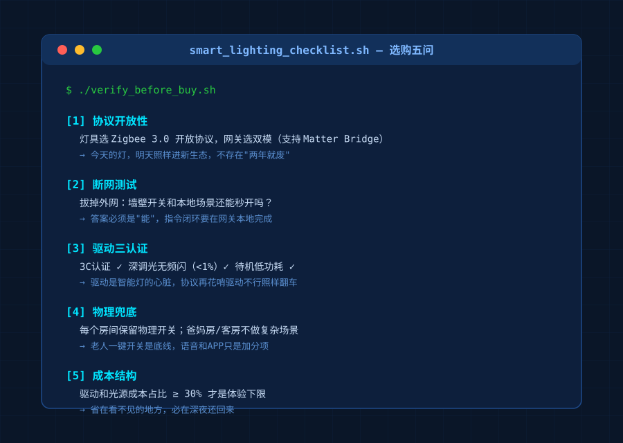

最近刷到一个帖子：一位姑娘花小两万装了全屋智能灯，最后崩溃的点不是功能不够，而是"手机一没电，满屋的灯全成了死物"；还有位网友说，妈妈从老家来住了三天，愣是没学会怎么开客厅的灯。评论区一堆人附和，"装完就后悔""不如普通开关靠谱"。
做了十年灯具，我想说句公道话：**这些吐槽90%是真的，但锅不在"智能"本身，而在方案选错了。**今天把4大痛点逐个拆开，每个都给一个实操解法。

痛点一：按了开关，灯慢半拍
晚上摸黑进屋，人走到房间中央灯才悠悠亮起——这种延迟感是劝退率最高的一条。很多人以为是灯不行，其实问题出在链路上：如果开灯指令要先上云、再下发，网络一抖，延迟就从几百毫秒变成好几秒。
**解法：选本地执行的协议。**Zigbee设备的开关指令在网关本地就能完成闭环，不依赖外网。实测涂鸦Zigbee网关在断网状态下，本地场景依然秒响应。买之前问一句："断网了，墙壁开关和本地场景还能用吗？"能答"能"的才考虑。
痛点二：老人和客人根本不会用
轻触开灯、长按调光、双击切场景——对年轻人是效率，对爸妈是考试。有位网友的原话很扎心："客房的灯亮了一整夜，因为客人睡前不知道怎么关。"
**解法：双保险设计。**智能照明的正确打开方式，是"保留物理开关 + 叠加智能"，而不是用智能取代一切：

| 场景 | 正确做法 |
|---|---|
| 爸妈房、客房 | 保留普通墙壁开关，灯具选"开关+智能"兼容型驱动 |
| 起夜动线 | 加一个无线贴墙开关，一按即亮，不用掏手机 |
| 全屋主控 | 网关放在客厅，卧室各留物理开关兜底 |
记住一条原则：**任何智能都不该让人迁就它。**老人一键开关是底线，语音和APP是加分项。
痛点三：被生态绑架，换个牌子全屋重来
"这个灯只能配这个网关，这个网关又连不上那个音箱"——想凑一个回家模式，得把别的牌子的灯全退了换同一家的。有人为凑联动多花了快三万，半年后又全改回普通开关。
**解法：网关选双模，灯具选开放协议。**2026年的新趋势是Matter Bridge：涂鸦、Aqara的新款网关已经支持把Zigbee灯"翻译"进苹果家庭、Google Home。也就是说，今天买的Zigbee灯，明天照样能进新生态，不存在"两年就废"。灯具端坚持选Zigbee 3.0这类开放协议，别碰封闭私有协议的"专配灯"。
痛点四：莫名自亮、低亮度频闪
半夜灯自己亮了，查不出原因；开低亮度看书，眼睛发胀。这两条看起来是玄学，其实都有硬件根源：
- 莫名自亮：多为无线开关误触网、或驱动待机电流受干扰，选干扰抑制做得好的驱动可避免；
- 低亮度频闪：廉价驱动PWM调光频率太低，深调光时波纹肉眼可见。认准无频闪认证的恒流驱动，调光深度做到1%以下还不闪的，才是真功夫。
**驱动电源是智能灯的"心脏"，协议再花哨，驱动不行照样翻车。**这也是为什么我们做灯具时，在驱动上的成本从不省——3C认证、深度无频闪调光、待机功耗，这三项决定了你晚上到底睡不睡得安稳。
一张选购清单，照着抄就行

- 协议：筒灯射灯选Zigbee 3.0，网关选支持Matter Bridge的双模款；
- 兜底：每个房间保留物理开关，客房爸妈房不做复杂场景；
- 驱动：认准3C认证 + 深调光无频闪 + 本地响应；
- 生态：优先涂鸦/米家这类本地语音深度集成的平台，别为联动凑全套；
- 预算：全屋灯光方案，驱动和光源的成本占比不该低于30%——这是体验的下限。
智能照明的终点不是"把家变成机房"，而是让灯在你需要的时候恰好是对的。选对了协议和驱动，它就该像空气一样——存在，但不添麻烦。
本文基于涂鸦Zigbee智能照明一线从业经验整理。更多LED驱动选型内容，欢迎访问 Nexlamp 耐利普科技。